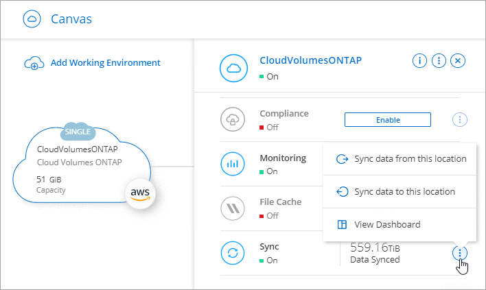
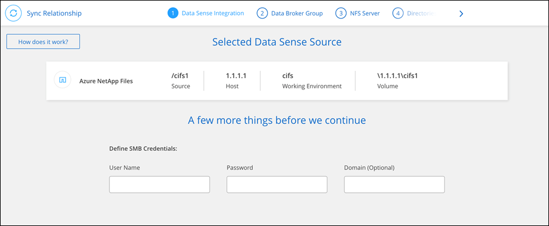

Release notes
Release notes
Create sync relationships
 Suggest changes
Suggest changes
When you create a sync relationship, the BlueXP copy and sync service copies files from the source to the target. After the initial copy, the service syncs any changed data every 24 hours.
Before you can create some types of sync relationships, you'll first need to create a working environment in BlueXP.
Create sync relationships for specific types of working environments
If you want to create sync relationships for any of the following, then you first need to create or discover the working environment:
-
Amazon FSx for ONTAP
-
Azure NetApp Files
-
Cloud Volumes ONTAP
-
On-prem ONTAP clusters
-
Create or discover the working environment.
-
Select Canvas.
-
Select a working environment that matches any of the types listed above.
-
Select the action menu next to Sync.

-
Select Sync data from this location or Sync data to this location and follow the prompts to set up the sync relationship.
Create other types of sync relationships
Use these steps to sync data to or from a supported storage type other than Amazon FSx for ONTAP, Azure NetApp Files, Cloud Volumes ONTAP, or on-prem ONTAP clusters. The steps below provide an example that shows how to set up a sync relationship from an NFS server to an S3 bucket.
-
In BlueXP, select Sync.
-
On the Define Sync Relationship page, choose a source and target.
The following steps provide an example of how to create a sync relationship from an NFS server to an S3 bucket.

-
On the NFS Server page, enter the IP address or fully qualified domain name of the NFS server that you want to sync to AWS.
-
On the Data Broker Group page, follow the prompts to create a data broker virtual machine in AWS, Azure, or Google Cloud Platform, or to install the data broker software an existing Linux host.
For more details, refer to the following pages:
-
After you install the data broker, select Continue.

-
On the Directories page, select a top-level directory or subdirectory.
If BlueXP copy and sync is unable to retrieve the exports, select Add Export Manually and enter the name of an NFS export.

If you want to sync more than one directory on the NFS server, then you must create additional sync relationships after you are done. -
On the AWS S3 Bucket page, select a bucket:
-
Drill down to select an existing folder within the bucket or to select a new folder that you create inside the bucket.
-
Select Add to the list to select an S3 bucket that is not associated with your AWS account. Specific permissions must be applied to the S3 bucket.
-
-
On the Bucket Setup page, set up the bucket:
-
Choose whether to enable S3 bucket encryption and then select an AWS KMS key, enter the ARN of a KMS key, or select AES-256 encryption.
-
Select an S3 storage class. View the supported storage classes.

-
-
On the Settings page, define how source files and folders are synced and maintained in the target location:
- Schedule
-
Choose a recurring schedule for future syncs or turn off the sync schedule. You can schedule a relationship to sync data as often as every 1 minute.
- Sync Timeout
-
Define whether BlueXP copy and sync should cancel a data sync if the sync hasn't completed in the specified number of minutes,hours, or days.
- Notifications
-
Enables you to choose whether to receive BlueXP copy and sync notifications in BlueXP's Notification Center. You can enable notifications for successful data syncs, failed data syncs, and canceled data syncs.
- Retries
-
Define the number of times that BlueXP copy and sync should retry to sync a file before skipping it.
- Continuous Sync
-
After the initial data sync, BlueXP copy and sync listens for changes on the source S3 bucket or Google Cloud Storage bucket and continuously syncs any changes to the target as they occur. There's no need to rescan the source at scheduled intervals.
This setting is available only when creating a sync relationship and when you sync data from an S3 bucket or Google Cloud Storage to Azure Blob storage, CIFS, Google Cloud Storage, IBM Cloud Object Storage, NFS, S3, and StorageGRID or from Azure Blob storage to Azure Blob storage, CIFS, Google Cloud Storage, IBM Cloud Object Storage, NFS, and StorageGRID.
If you enable this setting, it affects other features as follows:
-
The sync schedule is disabled.
-
The following settings are reverted to their default values: Sync Timeout, Recently Modified Files, and Date Modified.
-
If S3 is the source, filter by size will be active only on copy events (not on delete events).
-
After the relationship is created, you can only accelerate or delete the relationship. You can't abort syncs, modify settings, or view reports.
It is possible to create a Continuous Sync relationship with an external bucket. To do so, follow these steps:
-
Go to the Google Cloud console for the external bucket's project.
-
Go to Cloud Storage > Settings > Cloud Storage Service Account.
-
Update the local.json file:
{ "protocols": { "gcp": { "storage-account-email": <storage account email> } } } -
Restart the data broker:
-
sudo pm2 stop all
-
sudo pm2 start all
-
-
Create a Continuous Sync relationship with the relevant external bucket.
A data broker used to create a continuous sync relationship with an external bucket will not be able to create another Continuous Sync relationship with a bucket in its project.
-
-
- Compare By
-
Choose whether BlueXP copy and sync should compare certain attributes when determining whether a file or directory has changed and should be synced again.
Even if you uncheck these attributes, BlueXP copy and sync still compares the source to the target by checking the paths, file sizes, and file names. If there are any changes, then it syncs those files and directories.
You can choose to enable or disable BlueXP copy and sync from comparing the following attributes:
-
mtime: The last modified time for a file. This attribute isn't valid for directories.
-
uid, gid, and mode: Permission flags for Linux.
-
- Copy for Objects
-
Enable this option to copy object storage metadata and tags. If a user changes the metadata on the source, BlueXP copy and sync copies this object in the next sync, but if a user changes the tags on the source (and not the data itself), BlueXP copy and sync doesn't copy the object in the next sync.
You can't edit this option after you create the relationship.
Copying tags is supported with sync relationships that include Azure Blob or an S3-compatible endpoint (S3, StorageGRID, or IBM Cloud Object Storage) as the target.
Copying metadata is supported with "cloud-to-cloud" relationships between any of the following endpoints:
-
AWS S3
-
Azure Blob
-
Google Cloud Storage
-
IBM Cloud Object Storage
-
StorageGRID
-
- Recently Modified Files
-
Choose to exclude files that were recently modified prior to the scheduled sync.
- Delete Files on Source
-
Choose to delete files from the source location after BlueXP copy and sync copies the files to the target location. This option includes the risk of data loss because the source files are deleted after they're copied.
If you enable this option, you also need to change a parameter in the local.json file on the data broker. Open the file and update it as follows:
{ "workers":{ "transferrer":{ "delete-on-source": true } } }After updating the local.json file, you should do a restart:
pm2 restart all. - Delete Files on Target
-
Choose to delete files from the target location, if they were deleted from the source. The default is to never delete files from the target location.
- File Types
-
Define the file types to include in each sync: files, directories, symbolic links, and hard links.
Hard links are only available for unsecured NFS to NFS relationships. Users will be limited to one scanner process and one scanner concurrency, and scans must be run from a root directory. - Exclude File Extensions
-
Specify the regex or file extensions to exclude from the sync by typing the file extension and pressing Enter. For example, type log or .log to exclude *.log files. A separator isn't required for multiple extensions. The following video provides a short demo:
Regex, or regular expressions, differ from wildcards or glob expressions. This feature only works with regex. - Exclude Directories
-
Specify a maximum of 15 regex or directories to exclude from the sync by typing their name or directory full path and pressing Enter. The .copy-offload, .snapshot, ~snapshot directories are excluded by default.
Regex, or regular expressions, differ from wildcards or glob expressions. This feature only works with regex. - File Size
-
Choose to sync all files regardless of their size or just files that are in a specific size range.
- Date Modified
-
Choose all files regardless of their last modified date, files modified after a specific date, before a specific date, or between a time range.
- Date Created
-
When an SMB server is the source, this setting enables you to sync files that were created after a specific date, before a specific date, or between a specific time range.
- ACL - Access Control List
-
Copy ACLs only, files only, or ACLs and files from an SMB server by enabling a setting when you create a relationship or after you create a relationship.
-
On the Tags/Metadata page, choose whether to save a key-value pair as a tag on all files transferred to the S3 bucket or to assign a metadata key-value pair on all files.


This same feature is available when syncing data to StorageGRID and IBM Cloud Object Storage. For Azure and Google Cloud Storage, only the metadata option is available. -
Review the details of the sync relationship and then select Create Relationship.
Result
BlueXP copy and sync starts syncing data between the source and target.
Create sync relationships from BlueXP classification
BlueXP copy and sync is integrated with BlueXP classification. From within BlueXP classification, you can select the source files that you'd like to sync to a target location using BlueXP copy and sync.
After you initiate a data sync from BlueXP classification, all of the source information is contained in a single step and only requires you to enter a few key details. You then choose the target location for the new sync relationship.
